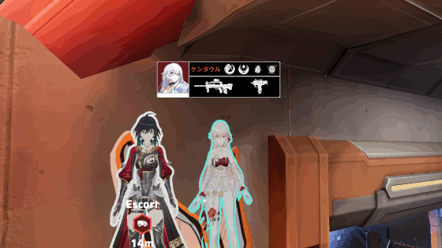

| Home | Blog | Games | Links | Music |
After many months of anticipation from some, iDreamSky released the game on November 22, 2024.
I started to play the game shortly after its release after i became disappointed with Snowbreak.
While i enjoyed Snowbreak for what it is, a 3rd person anime shooter in a market that had very few of them at the time,
i was rather annoyed by the fact that they had removed male operators before, and beyond that, beholden to the (sadly) toxic chinese fanbase.
Strinova is no different in that it's also a chinese company but isn't a game that focuses on fanservice, unlike what Snowbreak ultimately became.
Before Snowbreak, there was also Sword Art Online : Fatal Bullet, an excellent anime shooter that i can easily recommend to other people.
Sadly, that game runs extremely poorly on most PCs so i'm happy to say that Strinova on the same engine (Unreal Engine 4) runs pretty smoothly.
The story of the game is rather unimportant and mostly serves as the game's settings as well as taking the opportunity to explain the controls to newcomers.
The old world is in ruins and its citizens decide to migrate to a new, multidimensional world called "Strinova", where many "Superstrings" fight for their beliefs and the future of humanity.
You are the Navigator of this world, a lighthouse for everyone to follow, guiding them to a brighter future...
Due to the plot, you are not able to select characters beloging to PUS as attackers, and not allowed to select Scissors characters as defenders.
This is quite unfortunate and actually reminds me of Concord of all things : the infamous hero shooter that was also critized for preventing you for using the same characters in a similar way.
On the upside, Urbino characters can be used on either side. This restriction does not apply to Deathmatch or 7v7 mode.
The game has an interesting gimmick reminiscent of Paper mario : your character can become flat like a paper !
You can use this to your advantage to avoid bullets, go through tight corners, fly and stick to walls. This does come at the downside that you cannot crouch.
You also cannot shoot while in paper mode but it's possible to set the controls to "Hold" instead, allowing you to turn to paper as soon as you're done shooting.

It does become amusing the first minutes of using it but i'm not sure it's quite the W that the devs think it is, as it becomes a chore to actually use.
It leads to interesting and memorable moments however and i suspect they did so to avoid one-sided games.
This game is quite a lot slower compared to say, Warzone. You must rely on your teammates and attempt to ambush your opponents to win games as otherwise relying on your shooting skills alone
will be extremely difficult and rarely will say, one player manage to defeat 3 enemies on his own.
There are several game modes available : 3v3 Deathmatch, Escort, Demolition and 7v7 Team Deathmatch.
3v3 Deathmatch is my least favorite for one simple reason : the game instead simply pits you against bots and 3 of your teammates.
It is an easy way to rank up and train but is otherwise boring and not really multiplayer.
Escort is easily the best one imo : You need to escort a truck to the final destination. To do so, you must stay close to the truck and ensure no enemies comes close to it.
Team work in this mode is quite key to winning games.
Demolition is also another favorite of mine, albeit a bit less so.
Attackers's team need to drop a bomb at a specific location and ensure defenders don't disarm it or kill all of them.
Team work here is even more crucial, and if you're not making use of the game's built-in alert messages/chat, you'll likely lose games.
7v7 is basically an all-out deathmatch mode. Sadly i feel like the maps are way too small (way smaller than Escort ones) for 14 players and it just becomes a tight mess.
I'm a bit disappointed there isn't a game mode like Capture the flag or even some fun random ones but what is here is serviceable and a lot more than Snowbreak even proposed.
Ranked is also available but i'm, to be honest, not interested in the competitive aspect of this game (and cooperating with russian players is like talking to aliens).
Ranked is quite toxic compared to the casual "Challenge" mode, so i mostly recommend that you avoid Ranked mode.
Outside of game modes, you can also buy characters with either ingame currencies or with actual money.
Unfortunately to get premium skins, it's pretty much impossible to get them the "fremium" way, you have to spend money to get them.
It's possible you could get some from ranked but given the hostility i faced in that mode, i would rather not do that...
But i believe that's not even the case anyway, which is very unfortunate. Unlocking characters is also very sluggish.
Apparently, iDreamSky made it this way because Chinese players were able to easily unlock most of the skins and characters during the beta test.
Unfortunately, this did turn off some players and the initial launch version also removed crossplay. It was brought back later in a limited capacity,
but only if your ping is under 200ms. For the most part, the netcode is mostly solid but there were instances of the game completely
failling to respond or behaving oddly in about 3 matches out of 200 or so.
I may have sounded very negative here but i did in fact enjoy this game quite a lot and as of the writing of this, there isn't quite a lot of games like this one.
It's nowhere near perfect but is a perfect time waster and a decent valorant/overwatch anime clone with cute characters.
The games themselves usually don't last more than 10 minutes and the game's balance is pretty decent.
The characters's ultimate skills do really turn around games if used at unexpected moments, something that's not a thing in games like COD.
I do guess though that the healers in this game are pretty weak. Celestia's healing capabilities are minimal and her main gun is some of the weakest.
Kokona is another healer except she can also revive characters and also heal them up more quickly, she cannot regenerate armor like Celestia can however.
The snipers like Kokona at close range are extremely vulnerable to machine gun users and secondary weapons are too weak to deal with them.
This includes weapons like the Stinger (ideal for snipers), the Katana (mostly for machine gun users)... The rest like the Athena gun are simply just bad.
Each character is also stuck with their main gun, you can only change the secondary weapons (which are quite weak).
Overall, in spite of my criticism with it, i think it is a decent hero anime shooter that people should at least give a quick try to see if they would enjoy it.
For now the game is only available for Windows PCs (Steam deck is not supported !) but should be available next early year for Android, iOS, PS5 and Xbox Series.
It does remain to be seen whenever the game will last on the long term as competition is heating up.
Fate trigger : The novita is a big contender but will not release to the public until late 2025, not to mention there may be more in the future.
Up until then however, this is a decent game for what it is.
Now take the quiz and see if you even bothered to read all of this.